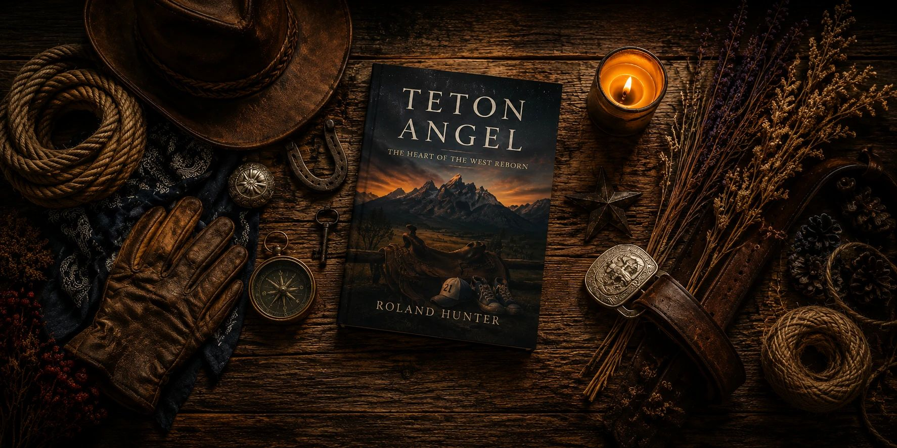

Some books are easy to finish and hard to talk about. Teton Angel is the other kind. It's a Christian family mystery about the secrets people keep out of love, and sooner or later, someone in your group is going to take a side.
Nothing in these questions gives away the plot, so it's safe to share this page before everyone has finished. Your conversation, of course, is another matter.
A reading schedule
The book has 352 pages and 56 short chapters, so it splits easily:
- One meeting: read the whole book, then start with the first question below.
- Three meetings: chapters 1–19, chapters 20–38, then chapters 39–56 and the epilogue.

Discussion questions
Secrets and silence
- Kasey isn't ready to tell her daughter the truth, and Miss Leah won't break her promise. Early in the book, whose side were you on? Did that change?
- Aiden suggests telling a child a hard truth a little at a time as she grows. Is that wise, or does it only put off the hard part?
- Some characters carry secrets that were handed to them by someone else. What does that do to the person keeping the secret? What does it do to the person being protected?
- Where is the line between a family's privacy and a family's secret?
Faith and suffering
- When Kasey's mother gets sick, she doesn't believe God gave her the cancer. She believes He will use it for a greater purpose. How do you respond to that? Did the rest of the book support it?
- Some characters pray through their worst moments, and others are furious with God. Whose faith did you find most believable?
- Forgiveness comes up here in very hard circumstances. Who is forgiveness really for? Is anything in this book unforgivable?
- What does the word angel mean in this story? Did your answer change as you read?
Family and belonging
- Miss Leah chooses to become a grandmother to a family she wasn't born into. What makes someone family?
- Conrad tells Roy he can go on the trail ride only if he finds his own horse. Is that good teaching or just a hard man being hard? Where else do you see tough love in the book, and does it work?
- Conrad's sons turn out very differently from one another. Which of them did you understand best? Which one reminded you of someone you know?
The town and the line
- The book opens with a small favor at a gas station. Where did you see a small kindness travel further than anyone expected?
- In this valley, everyone knows everyone's business, except for the things that matter most. Does a small town protect people or fail them?
- The introduction talks about a line between right and wrong, good and evil, knowledge and innocence. Where did a character cross that line for reasons you understood?
- The introduction ends with the words Hold the line. What do they mean to you after finishing the book?
The land and the stone
- How do the Tetons and the work of ranching shape these people? Could this story happen anywhere else?
- Look again at the monument at the foot of Roy's grave: the saddle, the cap, the unlaced sneakers. What did you guess about it before you knew? Which detail stays with you?
One for the drive home
Who holds the stories in your family? Is there a chest, a box or a drawer you've never asked about? You might start there.
Make a night of it
Bring a batch of no-bake oatmeal peanut butter cookies. They turn up in chapter one, and they may be the start of a truce. If your group reads Teton Angel, we'd love to see it: tag @tetonangel on Instagram or find us on Facebook.
New to the valley? Keep our character guide handy, and read The Cedar Chest for more on the secret that starts it all.
Get copies for your group
Teton Angel is available in paperback, hardcover and Kindle.
Get the book →